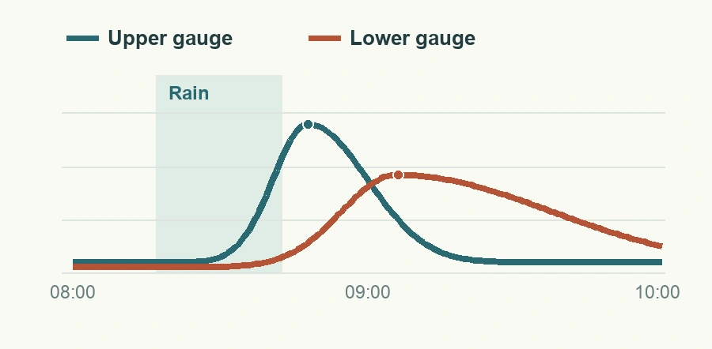
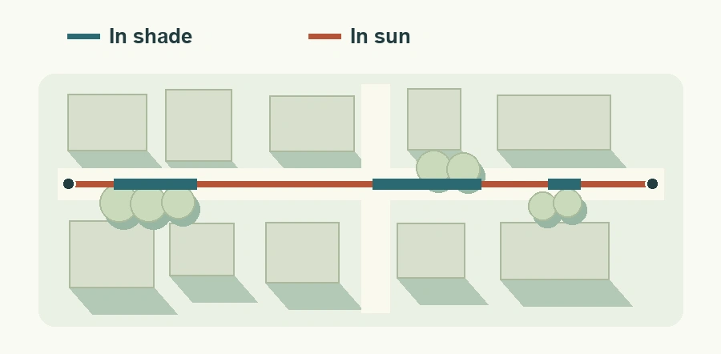
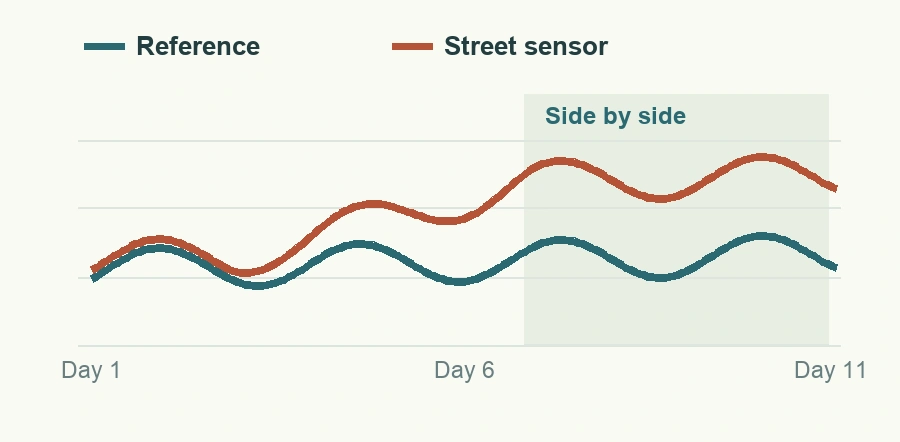

Qinghe Lu
陆清禾Field Scientist at Alder Bay Field Lab
I study how heat and rain vary from one street to the next. I started out mapping drainage channels on foot. These days I pair field notebooks with sensors, especially in places where the nearest weather station misses what residents see on their own block.
Research Interests
- Urban Hydrology
Where does rain collect when it falls faster than a street can drain?
Curbside gauges · Storm timing · Street gradients
Selected work- Outdoor Heat
How much direct sun does a pedestrian encounter along a route?
Shade mapping · Walking surveys · Thermal exposure
Selected work- Sensor Reliability
How can a field team tell a faulty reading from a local change?
Instrument drift · Co-location · Reference measurements
Selected work
News
Our field note on Rainline follows the path of water between two curbside gauges.
A new walking survey traces the boundary between sun and shade along the Alder Bay waterfront.
Our working paper DriftMap explores how to diagnose a gradual change in a street sensor.
The autumn field practicum begins with an afternoon spent testing sensors side by side.
Our ShadeGrid study maps the gaps between patches of shade along a walking route.
Show older news
The lab opens its first rain-gauge transect along Alder Bay’s canal walk.
I joined Alder Bay Field Lab as a field scientist.
Selected Publications
FS 2026 Rainline: Reading Street Flooding from Sparse Water-Level Sensors

After a downpour, two flooded corners can look identical. One drains within minutes. The other feeds a pool that stretches across an intersection.
Rainline lines up readings from neighboring curbside gauges with the onset of rain. The time between peaks helps a field crew decide where to look for a connected stretch of standing water.
Urban Field Methods 2025 ShadeGrid: Mapping Shade Along Walking Routes

A shaded park can still be a hot walk away. ShadeGrid follows a pedestrian route through a street map and estimates where buildings and tree crowns cast shade as the sun moves.
Mapping uninterrupted stretches of direct sun reveals where a short detour could offer relief on the way to the park.
Under review 2026 DriftMap: Separating Sensor Drift from Neighborhood Change

When a street sensor gradually reads warmer than its neighbors, the equipment and the street are both plausible explanations.
DriftMap uses short side-by-side measurements to test the instrument against a reference before treating the difference as a change in the neighborhood.


Selected Honors & Awards
- Saltbend Open Methods Award (Community field tools)
- Alder Bay Fieldwork Fellowship
Connect & Internships
I welcome conversations with people tracing rain, heat, or other changes at street level. I especially enjoy comparing a puzzling sensor record with observations from someone who knows the site.
Students interested in fieldwork or environmental data analysis are welcome to email me with a question they would like to investigate.